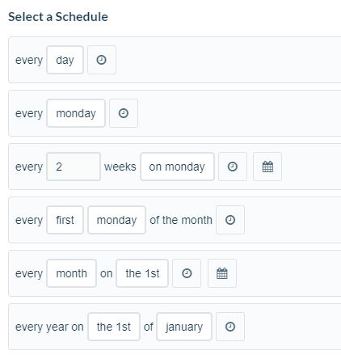
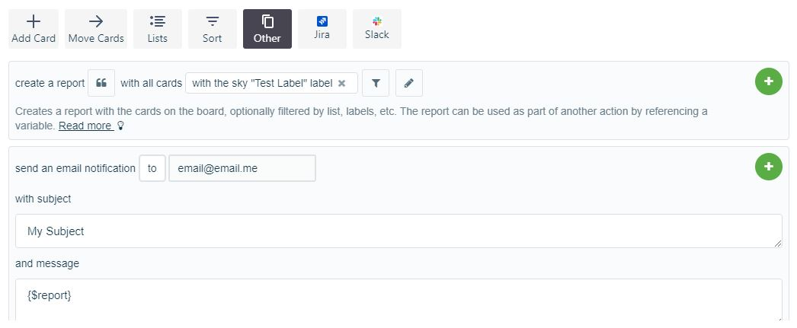

Trello-Bulter steps to create reports
With the integration of Bultler with Trello, now you can create custom reports for your Board.
Here is how:
-
Click on 'Butler' button in your Board
-
Click on 'Calendar' left-navigation link
-
Click on 'Create Command' button
-
First, you would have to Add a trigger: which is how ofter you want to generate the report. It can be daily, weekly, or any of the other options below:

-
Then, to create report, select the 'Other' option
-
Add the filter for the cards to be included
-
Also, the pattern to display can be formatted
-
Fill up the email details. Here is an example of how it will look:

-
Add the above customizations, Save and you are all set!